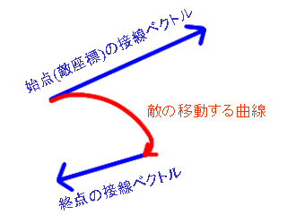
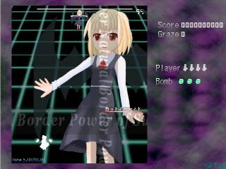
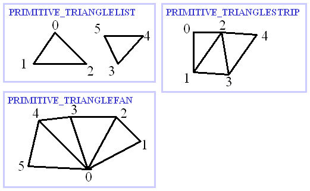

関数を、スクリプト中にかくと、決められた動作をおこせます。
全てのスクリプト部分で使える関数です。
敵や弾を移動する関数です。
SetX(引数：1)
1) x座標
x座標を設定します。
SetY(引数：1)
1) y座標
y座標を設定します。
SetSpeed(引数：1)
1) 速度
移動速度を設定します。
SetAngleで指定した方向に設定した速度で移動します。
SetAngle(引数：1)
1) 角度
移動角度を設定します。
SetSpeedで指定した速度で設定した角度で移動します。
SetMovePosition01(引数：3)
1) x座標
2) y座標
3) 速度
指定した座標へ向かって、設定した速度で移動します。移動が完了すると敵は停止します。
SetMovePosition02(引数：3)
1) x座標
2) y座標
3) フレーム
指定した座標へ向かって、設定したフレームで移動します。移動が完了すると敵は停止します。
SetMovePosition03(引数：4)
1) x座標
2) y座標
3) 重み
4) 最大速度
指定した座標へ向かって移動しますが、指定した座標に近づくと設定した重みによって減速します。
SetMovePositionHermite(引数：7)
1) 終点x座標
2) 終点y座標
3) 始点接線ベクトルの大きさ
4) 始点接線ベクトルの角度
5) 終点接線ベクトルの大きさ
6) 終点接線ベクトルの角度
7) フレーム
指定した座標へ向かって曲線軌道で移動します。
始点(現座標)の接線ベクトル、移動終点座標、移動終点接線ベクトルからの
エルミートスプライン曲線上を指定したフレームで移動する関数です。
移動が完了すると敵は停止します
下図のような曲線軌道になります。

SetMovePositionRandom01(引数：7)
1) 移動量x
2) 移動量y
3) 速度
4) x最小値
5) y最小値
6) x最大値
7) y最大値
指定した矩形内でランダムに移動場所を決めます。
SetPlayerX(引数：1)
1) x座標
自機のx座標を設定します。
自機の移動範囲を制限したり、瞬間移動、吸引?等の効果に使えます。
SetPlayerY(引数：1)
1) y座標
自機のy座標を設定します。
SetCoordinateType(引数：1)
1) 座標系
COODINATE_TYPE_ABSOLUTE：絶対座標系
COODINATE_TYPE_RELATIVE：SetOriginで設定した座標を中心とした座標系
COODINATE_TYPE_PARENT ：敵の親を中心とした座標系
敵が中心とする座標系を設定します。
初期値はCOODINATE_TYPE_ABSOLUTEです。
SetOrigin(引数：2)
1) x座標
2) y座標
SetCoordinatesType(COODINATE_TYPE_RELATIVE)が指定された場合、
敵が中心とする座標を設定します。
敵弾の制御を行う関数です。
弾の数に制限はありませんが、あまりに多く存在すると処理落ちします。
CreateShot等の関数に渡す弾の画像は「弾の画像について」を参照してください。
SetShotDirectionType(引数：1)
1) タイプ
PLAYER：設定する弾の角度を自機方向からの角度にします。
ABSOLUTE：設定する弾の角度を絶対角度にします。
SEQUENCE：設定する弾の角度を現在の弾の角度からの変化にします。
SetShotData系の関数の前に使用することで、弾の角度の意味を変更できます。
SetShotKillTime(引数：2)
1) 弾のID;CreateShot系で作製したときに指定したID
2) 時間
弾が消滅する時間を設定します。設定しなければ画面外に出てしばらくたつまで弾は消滅しません。
CreateShot01(引数：6)
1) x座標
2) y座標
3) 速度
4) 角度
5) 画像
6) 遅延時間(弾が実体化するまでの時間)
弾を簡易的に発射するための関数。
途中で角度変化等を行うことはできない。
CreateShot02(引数：8)
1) x座標
2) y座標
3) 速度
4) 角度
5) 加速度(1フレームあたりの速度変化量)
6) 最大速度(最低速度)
7) 画像
8) 遅延時間(弾が実体化するまでの時間)
弾を簡易的に発射するための関数。
途中で角度変化等を行うことはできない。
CreateShot11(引数：6)
1) x座標
2) y座標
3) x速度
4) y速度
5) 画像
6) 遅延時間(弾が実体化するまでの時間)
弾を簡易的に発射するための関数。
途中で角度変化等を行うことはできない。
CreateShot01と違い、こちらはx,y方向のベクトルを指定する。
CreateShot12(引数：10)
1) x座標
2) y座標
3) x速度
4) y速度
5) x加速度(1フレームあたりの速度変化量)
6) y加速度(1フレームあたりの速度変化量)
7) x最大速度(最低速度)
8) y最大速度(最低速度)
9) 画像
10) 遅延時間(弾が実体化するまでの時間)
弾を簡易的に発射するための関数。
途中で角度変化等を行うことはできない。
CreateShot02と違い、こちらはx,y方向のベクトルを指定する。
CreateShotA(引数：4)
1) ID：自由に指定できる数値。このあとにSetShotDataA、FireShot、AddShot関数に同じものを使う。
2) x(弾を出現させる絶対x座標。AddShotに使用する場合は弾からの座標。)
3) y(弾を出現させる絶対y座標。AddShotに使用する場合は弾からの座標。)
4) 遅延時間(弾が実体化するまでの時間)
弾を作製する関数。
このあとに、SetShotDataAで動きを設定したあと、FireShotで発射させる。
SetShotDataA(引数：8)
1) ID：CreateShotAで指定したID。
2) 軌道を変化させるフレーム(弾実体化後の経過フレーム)
3) 速度(NULLを指定することで現在の値を引き継ぐ)
4) 角度(NULLを指定することで現在の値を引き継ぐ)
5) 角速度(1フレームあたりの角度変化量)
6) 加速度(1フレームあたりの速度変化量)
7) 最大速度(最低速度)
8) 画像
弾の軌道を設定する関数。
1つの弾に何回も行うことができ、何度でも軌道を変化させられる。
(0フレーム目の設定だけは行ってください)
SetShotDataA_XY(引数：9)
1) ID：CreateShotAで指定したID。
2) 軌道を変化させるフレーム(弾実体化後の経過フレーム)
3) x速度
4) y速度
5) x加速度(1フレームあたりの速度変化量)
6) y加速度(1フレームあたりの速度変化量)
7) 最大x速度(最低速度)
8) 最大y速度(最低速度)
9) 画像
弾の軌道を設定する関数。
1つの弾に何回も行うことができ、何度でも軌道を変化させられる。
(0フレーム目の設定だけは行ってください)
CreateLaser01(引数：8)
1) x(レーザーを設置する絶対x座標)
2) y(レーザーを設置する絶対y座標)
3) 速度
4) 角度
5) レーザーの最大長さ
6) レーザーの幅
7) 画像
8) 遅延時間(レーザーが実体化するまでの時間)
射出型レーザーを発射する。
途中で角度変化等を行うことはできない。
CreateLaserA(引数：7)
1) ID：自由に指定できる数値。このあとにSetLaserDataA、FireShot、AddShot関数に同じものを使う。
2) x(レーザーを設置する絶対x座標)
3) y(レーザーを設置する絶対y座標)
4) レーザーの長さ
5) レーザーの幅
6) 画像
7) 遅延時間(レーザーが実体化するまでの時間)
設置型レーザーを作製する関数。
このあとに、SetLaserDataAで動きを設定したあと、FireShotで発射させる。
SetLaserDataA(引数：7)
1) ID：CreateLaserAで指定したID。
2) 軌道を変化させるフレーム(FireShot後の経過フレーム)
3) 角度(NULLを指定することで現在の値を引き継ぐ)
4) 角速度(1フレームあたりの角度変化量)
5) 長さの変化量
6) 設置点移動速度(1フレームあたりの設置点移動量)
7) 設置点移動角度
レーザーの動きを設定する関数。
1つのレーザーに何回も行うことができ、何度でも動きを変化させられる。
(0フレーム目の設定だけは行ってください)
CreateLaserB(引数：5)
1) ID：自由に指定できる数値。このあとにSetLaserDataB、FireShot、AddShot関数に同じものを使う。
2) レーザーの長さ
3) レーザーの幅
4) 画像
5) 遅延時間(レーザーが実体化するまでの時間)
敵を中心として敵に付いて移動するレーザーを作製する関数。
このあとに、SetLaserDataBで動きを設定したあと、FireShotで発射させる。
特定の敵を中心とするため敵スクリプト専用です。
SetLaserDataB(引数：9)
1) ID：CreateLaserBで指定したID。
2) 軌道を変化させるフレーム(FireShot後の経過フレーム)
3) 長さの変化量
4) 敵の中心からレーザー源までの距離(NULLを指定することで現在の値を引き継ぐ)
5) 敵の中心からレーザー源までの距離の1フレームあたりの変化量
6) 敵の中心からレーザー源までの角度(NULLを指定することで現在の値を引き継ぐ)
7) 敵の中心からレーザー源までの角度の1フレームあたりの変化量
8) レーザーの角度(NULLを指定することで現在の値を引き継ぐ)
9) レーザーの角度の1フレームあたりの変化量
レーザーの動きを設定する関数。
1つのレーザーに何回も行うことができ、何度でも動きを変化させられる。
(0フレーム目の設定だけは行ってください)
CreateLaserC(引数：7)
1) ID：自由に指定できる数値。このあとにSetLaserDataC、FireShot、AddShot関数に同じものを使う。
2) x(レーザーを設置する絶対x座標)
3) y(レーザーを設置する絶対y座標)
4) レーザーの幅
5) 残像を引くフレーム数(大きいほど長いレーザーになる。32程度。)
6) 画像
7) 遅延時間(レーザーが実体化するまでの時間)
曲げられる射出型レーザーを作製する関数。
このあとに、SetLaserDataCで動きを設定したあと、FireShotで発射させる。
ただし他の弾、レーザーに比べて重いです。
長くなるほど重くなります。
SetLaserDataC(引数：7)
1) ID：CreateLaserCで指定したID。
2) 軌道を変化させるフレーム(レーザー実体化後の経過フレーム)
3) 速度(NULLを指定することで現在の値を引き継ぐ)
4) 角度(NULLを指定することで現在の値を引き継ぐ)
5) 角速度(1フレームあたりの角度変化量)
6) 加速度(1フレームあたりの速度変化量)
7) 最大速度(最低速度)
レーザーの動きを設定する関数。
1つのレーザーに何回も行うことができ、何度でも動きを変化させられる。
(0フレーム目の設定だけは行ってください)
AddShot(引数：4)
1) 加えられた弾を放出するフレーム
2) 追加先の弾(レーザー)ID
3) 追加元の弾(レーザー)ID
4) 弾を放出するレーザー源からの距離(追加先がレーザーでない場合は無視される)
弾に弾を持たせる関数。
使用すると追加元のID弾(レーザー)の設定は消滅する。
弾を分裂させたり、敵弾を出す敵弾を作製する場合に用いる。
レーザーから弾を出したい場合にも、用いることができる(禁忌「レーヴァテイン」等)。
同じ弾に対して何度も実行でき、別弾を持たせた弾を別弾にもたせることもできる(説明しづらい…)。
FireShot(引数：1)
1) 発射する弾のID
CreateShot、CreateLaserで作製した弾を発射する関数。
発射したID弾(レーザー)の設定は消滅する。
CreateShotFromScript(引数：7)
1) 定義してある弾スクリプト名(文字列)
2) x座標(弾スクリプト内でGetXで取得可能)
3) y座標(弾スクリプト内でGetYで取得可能)
4) 速度(弾スクリプト内でGetSpeedで取得可能)
5) 角度(弾スクリプト内でGetAngleで取得可能)
6) 遅延時間(弾スクリプト内でOnDelayで取得可能)
7) 任意の値(弾スクリプト内でGetArgumentで取得可能)
スクリプトで定義してある弾を作製します。
DeleteEnemyShot(引数：1)
1) タイプ
ALL：全ての敵弾を消します
SHOT：ボムに耐性のない敵弾だけ削除します(レーザー等は消えません)
CHILD：子に該当する敵弾を全て削除します
敵弾を削除します。CHILDは敵スクリプト内でしか使えません。
DeleteEnemyShotInCircle(引数：4)
1) タイプ
ALL：全ての敵弾を消します
SHOT：ボムに耐性のない敵弾だけ削除します(レーザー等は消えません)
2) x座標
3) y座標
4) 半径
指定円内の敵弾を削除します。
DeleteEnemyShotImmediatelyInCircle(引数：4)
1) タイプ
ALL：全ての敵弾を消します
SHOT：ボムに耐性のない敵弾だけ削除します(レーザー等は消えません)
2) x座標
3) y座標
4) 半径
指定円内の敵弾を即座に削除します。
DeleteEnemyShotToItem(引数：1)
1) タイプ
ALL：全ての敵弾を消します
SHOT：ボムに耐性のない敵弾だけ削除します(レーザー等は消えません)
CHILD：子に該当する敵弾を全て削除します
敵弾を削除して得点アイテムに変えます。CHILDは敵スクリプト内でしか使えません。
DeleteEnemyShotToItemInCircle(引数：4)
1) タイプ
ALL：全ての敵弾を消します
SHOT：ボムに耐性のない敵弾だけ削除します(レーザー等は消えません)
CHILD：子に該当する敵弾を全て削除します
2) x座標
3) y座標
4) 半径
指定円内の敵弾を削除して得点アイテムに変えます。
CHILDは敵スクリプト内でしか使えません。
SetShotColor(引数：3)
1) 赤(0-255)
2) 緑(0-255)
3) 青(0-255)
作製する敵弾に指定した色を合成します。
SetShotColor(255, 255, 255)で元の色になります。
例えば、CreateShot01(〜〜〜,WHITE11)の前に
SetShotColor(128, 128, 255)を実行すると、WHITE11ですが弾は青っぽくなります。
ただしレーザーとxxx05(大玉)は加算合成描画を行います。
SetShotColor(0, 0, 0)後にレーザーを射出すると見えなくなるので注意してください。
(加算合成しない弾でもSetShotColorを使うと白い部分が無くなってしまうので、
なるべくSetShotColorは使わずにRED、GREEN、BLUE、YELLOW、PURPLE、AQUA、WHITEの各色を使ってください。)
LoadUserShotData(引数：1)
1) ファイル名(文字列)
ファイルに書いてあるデータから、弾画像を追加する関数です。
1ファイルしか読み込めない仕様です。
何度も実行するとデータが上書きされていきます。
ファイルの書き方等は弾画像の追加を参照してください。
SetShotAutoDeleteClip(引数：1)
1) 弾自動削除境界(左、初期値：64)
2) 弾自動削除境界(上、初期値：64)
3) 弾自動削除境界(右、初期値：64)
4) 弾自動削除境界(下、初期値：64)
弾が自動削除される境界を設定します。
STGシーンの外側で弾の消えない境界を設定します。
あまり大きな値を設定すると、いつまでたっても弾が消えなくなり
重くなるので注意してください。
描画を行う関数です。
DrawGraphic(引数：2)
1) x座標
2) y座標
設定した情報で描画を行う関数
指定する座標は中心座標。
LoadGraphic(引数：1)
1) ファイル名(実行ファイルからの相対パス文字列)
画像ファイルを読みこんで、テクスチャを作製します。
読みこめる画像は、bmp、png。
色はRGB(0,0,0)が抜けます。もしくはpngでα値を保存。
DeleteGraphic(引数：1)
1) ファイル名(実行ファイルからの相対パス文字列)
読みこんだ画像ファイルを破棄します。
SetTexture(引数：1)
1) 読みこんである画像のファイル名(実行ファイルからの相対パス文字列)
DrawGraphicで描画する画像を設定します。
SetGraphicRect(引数：4)
1) 描画元矩形左
2) 描画元矩形上
3) 描画元矩形右
4) 描画元矩形下
DrawGraphicで描画する描画元矩形を設定します。
SetGraphicScale(引数：2)
1) x方向拡大率(1.0が等倍)
2) y方向拡大率(1.0が等倍)
DrawGraphicで描画する描画元画像の拡大率を設定します。
SetGraphicAngle(引数：3)
1) x軸回転角度(0〜360 Radianではないです)
2) y軸回転角度(0〜360)
3) z軸回転角度(0〜360)
DrawGraphicで描画する描画元画像の回転角度を設定します。
SetAlpha(引数：1)
1) α値(0〜255)
DrawGraphicで描画時のα値(不透明度)を設定します。
SetColor(引数：3)
1) R値(0〜255)
2) G値(0〜255)
3) B値(0〜255)
DrawGraphicで描画時の色を設定します(全部255で元と同じ色)。
SetRenderState(引数：1)
1) 描画方法
ALPHA：半透明描画
ADD：加算合成描画
MULTIPLY：乗算合成描画
SUBTRACT：減算合成描画
DrawGraphicで描画時の合成法を指定します。
DrawText(引数：5)
1) 描画する文字列
2) 描画先x座標
3) 描画先y座標
4) 文字サイズ
5) α値(0-255)
文字列を描画します。ただし相当重いです。
多用すると、重すぎてゲームにならなくなります。
フルスクリーン時のデバッグ情報の出力などにも使えます。
//敵の座標を(128,64)に文字サイズ12で表示
DrawText("("~ToString(GetX)~","~ToString(GetY)~")",128,64,12,255);
|
音声を再生するのに使います。
再生可能なのは、wav、mp3、ogg、midです。
拡張子はwavにしておくことで、wav→mp3→ogg→midの順で検索します。
wavヘッダのmp3は、例えば午後のこ〜だだと出力するファイルの形式を「WAVE形式」にすることで作製できます。
LoadMusic(引数：1)
1) ファイル名(文字列)
曲をメモリ上に読みこみます。
PlayMusic(引数：1)
1) ファイル名(文字列)
曲を再生します。メモリに読みこまれてなかったら読みこみます。
DeleteMusic(引数：1)
1) ファイル名(文字列)
再生中の曲を停止してメモリから削除します。
FadeOutMusic(引数：2)
1) ファイル名(文字列)
2) 1フレームごとの低下音量幅(20程度)
指定した再生中の曲をフェードアウトします。
LoadSE(引数：1)
1) ファイル名(文字列)
効果音をメモリ上に読みこみます。
PlaySE(引数：1)
1) ファイル名(文字列)
効果音を再生します。メモリに読みこまれてなかったら読みこみます。
StopSE(引数：1)
1) ファイル名(文字列)
効果音を停止します。
DeleteSE(引数：1)
1) ファイル名(文字列)
効果音をメモリから削除します。
敵の座標や、自機の座標を取得したりするときに使います。
角度はdegです(radではありません)。
cos(引数：1、返り値：real型)
1) 値(0〜360の値)
コサインを取得します。
sin(引数：1、返り値：real型)
1) 値(0〜360の値)
サインを取得します。
tan(引数：1、返り値：real型)
1) 値
タンジェントを取得します。
acos(引数：1、返り値：real型)
1) 値
アークコサイン(cosの逆関数)を取得します。
asin(引数：1、返り値：real型)
1) 値
アークサイン(sinの逆関数)を取得します。
atan(引数：1、返り値：real型)
1) 値
アークタンジェント(tanの逆関数)を取得します
atan2(引数：2、返り値：real型)
1) y値
2) x値
線分(0,0)-(x,y)の角度(deg)を取得します。
log(引数：1、返り値：real型)
1) 値
自然対数(eを底とする対数)を取得します。
log10(引数：1、返り値：real型)
1) 値
常用対数(10を底とする対数)を取得します。
rand(引数：2、返り値：real型)
1) 最小値
2) 最大値
最小値と最大値の間の乱数(ランダムな実数)を取得します。
min>maxならrand(max,min)が返ります。
小数点以下の値もランダムに得られるので注意してください
また、rand(x, y)は[x, y)ではなく[x, y]になり、yを含みます。
rand_int(引数：2、返り値：real型)
1) 最小値
2) 最大値
最小値と最大値の間の乱数(ランダムな整数)を取得します。
min>maxならrand(max,min)が返ります。
また、[x, y)ではなく[x, y]になり、yを含みます。
prand(引数：2、返り値：real型)
1) 最小値
2) 最大値
最小値と最大値の間の乱数(ランダムな実数)を取得します。
psrandで発生させた乱数を取得します。
prand_int(引数：2、返り値：real型)
1) 最小値
2) 最大値
最小値と最大値の間の乱数(ランダムな整数)を取得します。
psrandで発生させた乱数を取得します。
psrand(引数：1)
1) 乱数種
prandとprand_intで取得できる乱数の初期化を行います。
int(引数：1、返り値：real型)
1) 値
小数部分をカットした値を取得します。
精度が悪いですが互換用に残してあります。
truncの方が精度が高いです。
truncate(引数：1、返り値：real型)
1) 値
符号を問わず小数点以下を切り捨てます。
truncでも同じ関数が呼ばれます。
round(引数：1、返り値：real型)
1) 値
四捨五入を行います。
ceil(引数：1、返り値：real型)
1) 値
+∞方向への切り上げを行います。
floor(引数：1、返り値：real型)
1) 値
-∞方向への切り下げを行います。
absolute(引数：1、返り値：real型)
1) 値
絶対値を取得します。
length(引数：1、返り値：real型)
1) 値
配列のサイズを取得します。
integral(引数：4、返り値：real型)
1) 下限値
2) 上限値
3) 分割幅
4) 式(文字列)
[下限〜上限]区間の積分結果を取得します。式は文字列で指定し、変数xで積分されます。(x以外は不可です)
引き数の文字列を局所的に数値解析することで結果を得るので、重いです。
分割幅は大きいほど精度がよくなると思いますが、大きすぎるとさらに重くなります。
//式x^2+3を区間0-1で積分 integral(0, 1, 64, "x^2+3"); |
ascent(enemy in EnumEnemyBegin..EnumEnemyEnd)
{
let enemyID = EnumEnemyGetID(enemy);
let enemyLife = GetEnemyInfo(enemyID, ENEMY_LIFE);
}
|
スクリプト間をまたいで共通の値を保存する関数です
SetCommonData(引数：2)
1) 保存する値の名前(文字列)
2) 保存する値
共通データを保存する関数です。
共通データ空間名「""」が対象になります。
GetCommonData(引数：1)
1) 取り出す値の名前(文字列)
共通データを読みこむ関数です。
値が存在しなかったら文字列"NoData"が返ります。
共通データ空間名「""」が対象になります。
GetCommonDataDefault(引数：2)
1) 取り出す値の名前(文字列)
2) デフォルトの値
共通の値を読みこむ関数です。
値が存在しなかったら第2引数が返ります。
共通データ空間名「""」が対象になります。
ClearCommonData(引数：0)
共通データを削除します。
共通データ空間名「""」が対象になります。
DeleteCommonData(引数：1)
1) 消去する値の名前(文字列)
指定した共通の値を削除する関数です。
共通データ空間名「""」が対象になります。
SaveCommonData(引数：0)
現在メモリ上にある共通データを、ファイルに保存する関数です。
実行中のスクリプトと同じフォルダに"ファイル名_save.dat"で保存されます。
共通データ空間名「""」が対象になります。
SaveCommonDataInReplayFile(引数：0)
現在メモリ上にある共通データを、リプレイファイル内に保存する関数です。
この関数を実行した時点の共通データがリプレイファイルに保存されます。
リプレイ再生中は無視されます。
共通データ空間名「""」が対象になります。
LoadCommonData(引数：0)
共通データをファイルからメモリ上に読み込む関数です。
実行中のスクリプトと同じフォルダにある"ファイル名_save.dat"を読み込みます。
共通データ空間名「""」が対象になります。
LoadCommonDataFromReplayFile(引数：0)
リプレイファイルから共通データを読み込みます。
リプレイ再生中以外は無視されます。
リプレイファイル内に共通データが無い場合無視されます。
共通データ空間名「""」が対象になります。
CreateCommonDataArea(引数：1)
1) 共通データ空間名(文字列)
共通データを保存するメモリ空間を新たに作成します。
共通データ空間「""」は初期状態で作成済みです。
SetCommonDataEx(引数：3)
1) 共通データ空間名(文字列)
2) 保存する値の名前(文字列)
3) 保存する値
共通データを保存する関数です。
GetCommonDataEx(引数：2)
1) 共通データ空間名(文字列)
2) 取り出す値の名前(文字列)
共通データを読みこむ関数です。
値が存在しなかったら文字列"NoData"が返ります。
GetCommonDataDefaultEx(引数：3)
1) 共通データ空間名(文字列)
2) 取り出す値の名前(文字列)
3) デフォルトの値
共通の値を読みこむ関数です。
値が存在しなかったら第2引数が返ります。
ClearCommonDataEx(引数：1)
1) 共通データ空間名(文字列)
共通データを削除します。
DeleteCommonDataEx(引数：2)
1) 共通データ空間名(文字列)
2) 消去する値の名前(文字列)
指定した共通の値を削除する関数です。
SaveCommonDataEx(引数：2)
1) 共通データ空間名(文字列)
2) 保存ファイルパス(文字列)
現在メモリ上にある共通データを、ファイルに保存する関数です。
ファイルに指定するパスは、
"snapshot"、"script"、"player"フォルダ内である必要があります。
SaveCommonDataInReplayFileEx(引数：1)
1) 共通データ空間名(文字列)
現在メモリ上にある共通データを、リプレイファイル内に保存する関数です。
この関数を実行した時点の共通データがリプレイファイルに保存されます。
リプレイ再生中は無視されます。
LoadCommonDataEx(引数：2)
1) 共通データ空間名(文字列)
2) ファイルパス(文字列)
共通データをファイルからメモリ上に読み込む関数です。
LoadCommonDataFromReplayFileEx(引数：1)
1) 共通データ空間名(文字列)
リプレイファイルから共通データを読み込みます。
リプレイ再生中以外は無視されます。
リプレイファイル内に共通データが無い場合無視されます。
IsCommonDataAreaExists(引数：1、返り値：boolean型)
1) 共通データ空間名(文字列)
共通データ空間が存在していれば真が返ります。
デバッグ用の関数です。
FullScreenでは用いることはできません。
配布前にはこれらの関数は削除してください。
CreateDebugWindow(引数：0)
デバッグ情報出力用のウィンドウを作製します。
OutputDebugString(引数：3)
1) 情報を出力する位置(0-10程度)
2) 任意の文字列
3) 情報を表示したい変数等
デバッグ用の情報を表示します。
情報を表示したい変数の型は自動で判断されます。
CreateDebugWindowを使ってない場合は無視されます。
その他の関数です。
区分できない関数の一覧です。
DeleteAllEnemyWithoutBoss(引数：0)
ボス以外の敵を全て消滅させます
SetPlayerInvincibility(引数：1)
1) 時間(無敵時間をフレーム単位で指定)
自機を指定時間無敵にします。
0を指定すると、自機の無敵時間を解除できます。
ExtendPlayer(引数：1)
1) 増加させる残機数
残機を増加させます。
SuperNaturalBorder(引数：1)
1) 継続時間
指定した時間継続する、森羅結界を発動させます。
ShootDownPlayer(引数：0)
自機を撃墜します。
SetEffectLayer(引数：1)
1) レイヤ(0-8)
0:背景
1:-
2:敵
3:自機(エフェクトオブジェクトの初期値)
4:アイテム
5:弾
6:会話イベントの画像
7:-
8:外枠(指定すると、枠部分が再描画されるため少し重くなります)
組み込みエフェクトの描画先のレイヤを指定します
(現在適用されるのはConcentration01,02です)
例えば5を指定した場合、弾の上の層に描画されます。
初期値は3です。
CollectItems(引数：0)
無条件に画面上のアイテムを自機に吸い寄せます。
AddScore(引数：1)
1) 増加させる得点
指定した値だけ得点を増加させます。
AddPoint(引数：1)
1) 増加させるPoint
指定した値だけPointを増加させます。
AddGraze(引数：1)
1) 増加させるGraze
指定した値だけGrazeを増加させます。
AddBomb(引数：1)
1) 増加させるBomb
指定した値だけBombを増加させます。
SetLifeZeroToAllEnemy(引数：0)
全ての敵のライフを0にします(全ての敵を倒します)。
SetAllowedContinueCount(引数：1)
1) コンティニュー回数
コンティニュー回数を設定します。
SetRateScoreSystemEnable(引数：1)
1) true:有効 false:無効
スコアにrateを反映するか指定します。
無効にした場合rate自体表示されなくなります。
SetDefaultStatusVisible(引数：1)
1) true:有効 false:無効
スコア、残機などの表示を設定します。
無効にした場合、枠にほとんど何も表示されなくなります。
SetNormpoint(引数：1)
1) ノルマ
Pointのノルマを指定します。負数を指定すると表示が消えます。
ForbidShot(引数：1)
1) true：弾使用不許可、false：弾使用許可
自弾の使用を禁止します。
ForbidBomb(引数：1)
1) true：ボム使用不許可、false：ボム使用許可
ボムの使用を禁止します。
Slow(引数：1)
1) Slowにする強度(0で通常、1で1/2倍、2で1/3倍速)
全てのオブジェクトの動きをスローにします。
スロー解除には0を設定します。
SaveSnapShot(引数：5)
1) ファイル名
2) 保存矩形(左)
3) 保存矩形(上)
4) 保存矩形(右)
5) 保存矩形(下)
指定範囲のスナップショットをファイルに保存します。
ファイルに指定するパスは、
"snapshot"、"script"、"player"フォルダ内である必要があります。
AddArchiveFile(引数：1)
1) アーカイブファイル名(文字列)
画像や音声を読み込むとき検索される、アーカイブファイルを追加します。
RaiseError(引数：2)
1) 表示するテキスト(文字列)
2) ダイアログのキャプション(文字列)
ダイアログを表示して、強制的にスクリプトを終了します。
Retry(引数：0)
リトライします。
assert(引数：2)
1) 条件
2) テキスト
条件がfalseなら、assertを発生します。
エラーを発生し指定したテキストを表示します。
GetVersion(引数：0、返り値：char型)
バージョン情報を文字列で取得します。
敵専用組み込み関数です。敵動作スクリプト部分にのみ使えます。
敵を制御する関数は、敵ライフ、スペル残り時間等を制御します。
SetLife(引数：1)
1) 敵のライフ
敵のライフを設定します。設定しなければ出現と同時に敵は消滅します。
@Initialize内で一回だけ変数を使用せず実行してください。
×)↓
let life=5000;SetLife(life);←連続再生のライフが変になります。
AddLife(引数：1)
1) 増減させるライフ値
敵のライフを増減させます。
ただしSetLifeで設定した値を越えることはできません。
SetTimer(引数：1)
1) スペルカード残り時間(秒単位)
スペルカードの残り時間を設定します。設定しなければ無制限になります。
SetInvincibility(引数：1)
1) 無敵時間(フレーム単位)
敵の無敵時間を設定します。設定した時間内は弾をあててもライフが減りません。
SetDamageRate(引数：2)
1) 自弾へのダメージ割合(0〜100)
2) ボムへのダメージ割合(0〜100)
自弾、ボムへの抵抗値を設定します。
0で無効化、100で元の威力です。
SetDamageRateEx(引数：4)
1) 自弾へのダメージ割合(0〜100)
2) ボムへのダメージ割合(0〜100)
3) 親への自弾ダメージ割合(0〜100)
4) 親へのボムダメージ割合(0〜100)
自弾、ボムへの抵抗値を設定します。
使い魔のダメージを敵ボスのライフに通したい場合に用いてください。
親へのダメージ割合の初期値は0です。
0で無効化、100で元の威力です。
SetDurableSpellCard(引数：0)
スペルカードを耐久弾幕用にします。
使用しておくと時間制限になってもスペルカードボーナスを得られます。
SetCollisionA(引数：3)
1) x座標
2) y座標
3) 半径
敵の当たり判定を登録します。この部分に自弾が当たると敵のライフが減少します。
当たり判定は何箇所でも登録できます。
SetCollisionB(引数：3)
1) x座標
2) y座標
3) 半径
敵の当たり判定を登録します。この部分に自機が当たると自機は撃墜されます。
当たり判定は何箇所でも登録できます。
SetScore(引数：1)
1) 得点
敵の得点を設定します。また、スペルカードボーナス対象になります。
CreateEnemyFromScript(引数：6)
1) 定義してある敵スクリプト名
2) x座標(敵スクリプト内でGetXで取得可能)
3) y座標(敵スクリプト内でGetYで取得可能)
4) 速度(敵スクリプト内でGetSpeedで取得可能)
5) 角度(敵スクリプト内でGetAngleで取得可能)
6) 任意の値(敵スクリプト内でGetArgumentで取得可能)
スクリプトで定義してある敵を作製します。
CreateEnemyFromFile(引数：6)
1) 敵スクリプトファイルへのパス(文字列)
2) x座標(敵スクリプト内でGetXで取得可能)
3) y座標(敵スクリプト内でGetYで取得可能)
4) 速度(敵スクリプト内でGetSpeedで取得可能)
5) 角度(敵スクリプト内でGetAngleで取得可能)
6) 任意の値(敵スクリプト内でGetArgumentで取得可能)
敵をファイルから読みこんで出現させます。ただし連続再生ファイルは不可です。
VanishEnemy(引数：0)
敵を消滅させます。
得点なども加算されません。
敵消滅時の効果音が必要ない時などにもどうぞ。
SetEnemyMarker(引数：0)
敵マーカーの状態を設定します。
true：マーカーを描画する
false：マーカーを描画しない
LastSpell(引数：0)
@InitializeでSetScore()等と共に関数指定すると、
ボム・残機共に無効になり被弾してもミスにならない代わり敵ライフが0になる。
なくても問題ないですが、エフェクト用関数です。
分類できないその他の関数も含みます。
Concentration01(引数：1)
1) エフェクト継続時間(フレーム単位)
敵が魔力(霊力? 妖力?)を集中(?)しているようなエフェクトを出現させます。
色は、SetColorで指定した色に依存します。
Concentration02(引数：1)
1) エフェクト継続時間(フレーム単位)
氷の結晶?を集中(?)しているようなエフェクトを出現させます。
Explosion01(引数：5)
1) x座標
2) y座標
3) α値の減少速度
4) 拡大速度
5) エフェクト終了時間(フレーム単位)
爆発?のエフェクトを描画します。
MotionBlur(引数：3)
1) タイプ
ALL：自機、敵、弾に残像がかかります。
SHOT：弾にだけ残像がかかります。
2) 残像がかかり続ける時間(フレーム)
3) 残像の強度(0〜244)
擬似モーションブラー関数です。弾等に残像を残します。
また、残像がかかっている間は強制的に加算合成描画になります。
(ほとんど妖夢専用？)
MotionBlurEx(引数：4)
1) タイプ
ALL：自機、敵、弾に残像がかかります。
SHOT：弾にだけ残像がかかります。
2) 残像がかかり続ける時間(フレーム)
3) 残像の強度(0〜244)
4) ALPHA or ADD
擬似モーションブラー関数です。弾等に残像を残します。
ALPHAもしくはADDで残像のかかり方を変えられます。
TimeStop(引数：4)
1) 時間が停まっている時間(フレーム単位) (解説しづらい…)
2) 自機(0:停止しない 1:停止)
3) 弾(0:停止しない 1:停止)
4) 背景(0:停止しない 1:停止)
指定したオブジェクトの時間を停めます。
自機は停止時も当たり判定があるので注意してください。
逆に停止している弾には当たり判定はありません。
咲夜さん以外が時間停止(自機)を行うとバグにしか見えない恐れがあるので、
自機を停止させるときはMotionBlur(弾)と併用するといい感じかもしれません。
CutIn(引数：7)
1) カットインのタイプ(KOUMA：紅魔郷、YOUMU：妖々夢)
2) スペルカード名等(文字列)
3) 画像ファイルへのパス
4) 描画元矩形左
5) 描画元矩形上
6) 描画元矩形右
7) 描画元矩形下
カットインを表示します。
紅魔郷タイプと、妖々夢タイプを選択できます。
SetTextは専用のものが自動的に呼ばれます。

SetText(引数：1)
1) 表示するテキスト(文字列)
スペル名等を表示します(途中で変更も可能です)。
空文字「""」を指定すると、表示してあるスペル名を消せます。
MagicCircle(引数：1)
1) false：魔法陣が消える、true：魔法陣が出現する
敵スペルカード使用時の魔法陣を出現させたり消したりできます。
SetScoreで得点を設定すると自動的にMagicCircle(true)が呼ばれます。
SetEffectForZeroLife(引数：3)
1) ライフ0から消滅までの時間(この間は動けます)
2) モーションブラーの強さ
3) スローの強さ
敵のライフが0になった瞬間から、消滅までの時間を設定できます。
また、モーションブラーや、スローの設定もできます。
CreateEventFromScript(引数：1)
1) 定義してあるイベントスクリプト名(文字列)
会話イベントを開始します。
互換用に残してあるEvent関数も同じ意味です。
CreateItem(引数：3)
1) アイテムの種類
ITEM_1UP：残機増加アイテム
ITEM_BOMB：ボム増加アイテム
ITEM_SCORE：得点アイテム
2) x座標
3) y座標
アイテムを設置します。
アイテムは設置点から暫く上昇して次第に落下してきます。
@Finalize内にかくことで、敵・スペルカード撃破時にアイテムを出現させられます。
出現先座標は多少乱数を含めないと同じ座標に重なって出現するので注意してください。
Expert(引数：0)
コンティニュー、デバッグキーの使用を不可にします。
敵の座標や、自機の座標を取得したりするときに使います。
GetSpeedX(引数：0、返り値：real型)
敵のx方向移動速度を取得します。
GetSpeedY(引数：0、返り値：real型)
敵のy方向移動速度を取得します。
GetLife(引数：0、返り値：real型)
敵の残りライフを取得します。
GetHitCount(引数：0、返り値：real型)
前フレーム中の被弾数を取得します。
(前フレームに減ったライフではありません)
GetTimeOfInvincibility(引数：0、返り値：real型)
残り無敵時間を取得します。
BeVanished(引数：0、返り値：boolean型)
敵が自弾に倒されたか、VanishEnemy関数で消滅したかを調べます。
自弾に倒された：false、VanishEnemy関数で消滅した：true
を返します。
BeParentVanished(引数：0、返り値：boolean型)
親が自弾に倒されたか、VanishEnemy関数で消滅したかを調べます。
自弾に倒された：false、VanishEnemy関数で消滅した：true
を返します。
IsMaster(引数：0、返り値：boolean型)
敵が本体なのか使い魔なのかを調べます。
使い魔：false、本体：true
を返します。
IsTimeOut(引数：0、返り値：boolean型)
タイムアウトで倒したかを調べます。
非タイムアウト：false、タイムアウト：true
を返します。
GetSpellCardBonusScore(引数：0、返り値：real型)
現在取得予定のスペルカードボーナスの値を返します。
GotSpellCardBonus(引数：0、返り値：boolean型)
@Finalizeでスペルカードを取得できたかを返します。
取得できなかった：false、取得した：true
を返します。
OnEvent(引数：0、返り値：boolean型)
非会話イベント中：false、会話イベント中：true
を返します。
GetEventStep(引数：0、返り値：real型)
イベントスクリプト内の「SetStep」で設定した値を取得します。
GetArgument(引数：0)
CreateEnemy実行時に最後の引数に指定した値を取得します。
GetArgumentDefault(引数：1)
1) 値
CreateEnemy実行時に最後の引数に指定した値を取得します。
値が存在しなかったら、この関数の引数が返ります。
弾専用組み込み関数です。弾動作スクリプト部分にのみ使えます。
弾スクリプトを制御する関数です。
SetDefault(引数：1)
1) 組み込み弾の種類(弾の画像についてを参照)
弾スクリプトに組み込みの弾を設定します。
SetCollisionBDefault、DrawGraphicDefaultを使う前に実行する必要があります。
SetLaser(引数：3)
1) レーザーの幅
2) 残像を引くフレーム数(大きいほど長いレーザーになる。32程度。)
3) 画像
弾スクリプトをレーザーにします。
SetCollisoinLaser、DrawLaserとセットで使用します。
長くなるほど重くなります。
SetCollisionB(引数：1)
1) x座標
2) y座標
3) 半径
弾の当たり判定を登録します。この部分に自機が当たると自機は撃墜されます。
当たり判定は何箇所でも登録できます。
SetCollisionBDefault(引数：0)
組み込みの弾の当たり判定を登録します。
使用前にSetDefaultを実行しておく必要があります。
SetCollisionLaser(引数：0)
レーザーの当たり判定を登録します。
使用前にSetLaserを実行しておく必要があります。
SetBombResist(引数：0)
ボムに対して耐性を持つことができます。
End(引数：0)
弾を消滅させます。
弾スクリプト描画専用関数です。
DrawGraphicDefault(引数：0)
組み込みの弾を描画します。一括描画できるので高速です。
使用前にSetDefaultを実行しておく必要があります。
DrawLaser(引数：0)
レーザーを描画します。
使用前にSetLaserを実行しておく必要があります。
弾スクリプト専用の特定の値を取得する関数です。
GetArgument(引数：0)
CreateShotFromScript実行時に指定した、第7引数の値を取得します。
OnDelay(引数：0、返り値：boolean型)
非遅延時間中：false、遅延時間中：trueを返します。
GetDelayTime(引数：0、返り値：real型)
残り遅延時間を取得します。
会話イベント専用の関数です。
SetChar(引数：2)
1) 設定するキャラクタの方向(LEFT：左、RIGHT：右)
2) 画像ファイルのパス(文字列)
キャラクタの画像を設定し出現させます。
この関数を使わないとキャラクタは出現しません。
DeleteChar(引数：1)
1) キャラクタの方向(LEFT：左、RIGHT：右)
表示されているキャラクタを消します。使う機会は多分ないと思います。
MoveChar(引数：1)
1) 設定するキャラクタの方向(LEFT：左、RIGHT：右)
2) 移動場所(FRONT：前、BACK：後)
表示されているキャラクタを移動します。
FRONTで前側、BACKで後ろ側です。
BACKのキャラクタは半透明描画になります。
SetGraphicRect(引数：5)
1) 設定するキャラクタの方向(LEFT：左、RIGHT：右)
2) 描画元矩形左
3) 描画元矩形上
4) 描画元矩形右
5) 描画元矩形下
描画キャラクタの矩形を設定します。
SetNameFromText(引数：4)
1) キャラクタの方向(LEFT：左、RIGHT：右)
2) テキストの色
(TEXT_RED、TEXT_GREEN、TEXT_BLUE、TEXT_YELLOW、
TEXT_PURPLE、TEXT_AQUA、TEXT_WHITE)
3) 名前(文字列)
4) 二つ名(文字列)
キャラクタの名前を表示します。
ただテキストを表示するだけなので、
こだわりたい方はSetNameFromTextureを用いてください。
SetNameFromTexture(引数：2)
1) キャラクタの方向(LEFT：左、RIGHT：右)
2) 読みこんであるテクスチャ名
キャラクタの名前を読みこんである画像から表示します。
DeleteName(引数：1)
1) キャラクタの方向(LEFT：左、RIGHT：右)
表示してある名前を削除します。
SetStep(引数：1)
1) 値
イベントの段階を設定します。
設定した値は敵スクリプト内で取得できます(GetEventStep)。
TextOutA(引数：1)
1) 文字列
TextOutでも互換用に同じ関数が呼ばれます。
文字列を描画します。使用しているフォントは「標準明朝」です。
文字列中のTabは無視されます。
改行は自動で行われますが、
一行に表示できるのは全角文字で20文字程度です。
(東方的な会話イベントでは自動改行なんて使わないかもしれません。
以下で説明してある「\n」で改行したほうがよさげです。)
次の文字列は特殊な意味を持ちます。
\n：改行
\c[色]：文字の色(行単位)
(色：RED,GREEN,BLUE,YELLOW,PURPLE,AQUA,WHITE)
以下が例です。
TextOut("\c[RED]楽しい夜になりそうね\n//文字色を赤色に、最後に改行
\c[BLUE]永い夜になりそうね");//文字色を青色に
|
ステージスクリプト専用の関数です。
script_stage_main内からしか呼べません
敵を出現させたりする関数です。
CreateEnemyFromScript(引数：6)
1) 定義してある敵スクリプト名(文字列)
2) x座標(敵スクリプト内でGetXで取得可能)
3) y座標(敵スクリプト内でGetYで取得可能)
4) 速度(敵スクリプト内でGetSpeedで取得可能)
5) 角度(敵スクリプト内でGetAngleで取得可能)
6) 任意の値(敵スクリプト内でGetArgumentで取得可能)
スクリプトで定義してある敵を作製します。
敵スクリプト内でのCreateEnemyFromScriptと同じです。
CreateEnemyFromFile(引数：6)
1) 敵スクリプトファイルへのパス(文字列)
2) x座標(敵スクリプト内でGetXで取得可能)
3) y座標(敵スクリプト内でGetYで取得可能)
4) 速度(敵スクリプト内でGetSpeedで取得可能)
5) 角度(敵スクリプト内でGetAngleで取得可能)
6) 任意の値(敵スクリプト内でGetArgumentで取得可能)
敵をファイルから読みこんで出現させます。ただし連続再生ファイルは不可です。
ボスとして出現させるならCreateEnemyBossFromFileを用いてください。
CreateEnemyBossFromFile(引数：6)
1) 敵スクリプトファイルへのパス(文字列)
2) x座標(敵スクリプト内でGetXで取得可能)
3) y座標(敵スクリプト内でGetYで取得可能)
4) 速度(敵スクリプト内でGetSpeedで取得可能)
5) 角度(敵スクリプト内でGetAngleで取得可能)
6) 任意の値(敵スクリプト内でGetArgumentで取得可能)
敵をファイルから読みこんでボスとして出現させます。
連続再生ファイルを読みこむこともできます。
この関数を用いて敵を呼び出すことで、敵ライフが表示されたりします。
ただし画面上にボスとして出現できる敵は一体だけです。
すでにボスが存在する場合この関数は無視されます。
CompileEnemyFromFile(引数：1)
1) 敵スクリプトファイルへのパス(文字列)
事前にスクリプトファイルをバイトコードに変換します。
この関数を実行しておくとCreateEnemyFromFileを呼んだとき、
高速に敵を出現させることができます。
ClearByteCodeCache(引数：0)
キャッシュしてあるバイトコードを全て破棄します。
ただし、画面上の敵が0体の時しか実行できません。
CreateEventFromScript(引数：1)
1) 定義してあるイベントスクリプト名(文字列)
会話イベントを開始します。
敵スクリプトでのCreateEventFromScriptと同じです。
ClearStage(引数：0)
ステージを終了します。
IsClear(引数：0、返り値：boolean)
true:クリア、false：ゲームオーバーやクリア前
が返ります。
SetRenderFrame(引数：1)
1) 描画：true、描画しない：false
フレーム枠を描画するか指定します。
falseを指定した場合、STG枠より外側が再描画されなくなります。
ObjEffectを用いて自力描画する必要があります。
初期設定ではtrueです。
SetClearFrameEffectEnable(引数：1)
1) 有効：true、無効：false
ステージクリア時のエフェクトを設定します。
初期設定ではtrueです。
Expert(引数：0)
コンティニュー、デバッグキーの使用を不可にします。
ExpertEx(引数：3)
1) true：デバッグキーを使用可能にします、false：デバッグキーのを使用不可にします
2) コンティニュー回数
3) プレイヤー残機
コンティニュー、デバッグキー、自機の残機数を設定します。
@Initialize内で1回だけ実行してください。
ExtendPlayer(引数：1)
1) 増加させる残機数
残機を増加させます。
SuperNaturalBorder(引数：1)
1) 継続時間
指定した時間継続する、森羅結界を発動させます。
ステージ専用の描画関数です。背景に奥行きを出せる関数があります。
DrawGraphic3D(引数：3)
1) x座標
2) y座標
3) z座標
ワールド座標にテクスチャの描画を行う関数。
テクスチャはx-y面に張り付いているので、
x軸で90度回転させた方がしっくりくるかもしれません。
SetViewTo(引数：3)
1) x座標 (初期値0)
2) y座標 (初期値0)
3) z座標 (初期値0)
ビュー行列変換時のカメラの注視点を設定する関数。
SetViewFrom(引数：3)
1) 距離 (初期値500)
2) 方位角 (初期値90)
3) 仰角 (初期値45)
ビュー行列変換時のカメラの場所を設定する関数。
設定するのは注視点からの距離、方位角、仰角。
SetPerspectiveClip(引数：2)
1) 近クリッピング距離 (初期値10)
2) 遠クリッピング距離 (初期値1500)
パースペクティブ射影行列変換時のクリップ距離を指定します。
近クリップより近いものと遠クリップより遠くのものは描画されません。
WriteZBuffer(引数：1)
1) Zバッファに書き込まない：false、Zバッファに書き込む：true
Zバッファに書き込むか指定します。
初期設定ではfalseです。
UseZBuffer(引数：1)
1) Z比較を行わない：false、Z比較を行う：true
Z比較を行うか指定します。
初期設定ではfalseです。
SetFog(引数：5)
1) 開始点(視点からの距離)
2) 終了点(視点からの距離)
3) フォグの色(R)
4) フォグの色(G)
5) フォグの色(B)
フォグを発生させます。
毎フレームリセットされるので、
フォグを発生させたままにする場合は毎フレーム実行してください。
例えば遠くを暗く見せる場合は、
SetFog(250, 700, 0, 0 ,0 );
のように指定します。
プレイヤースクリプト専用の関数です。
script_player_main内からしか呼べません。
自機を制御する関数です。
SetX(引数：1)
1) x座標
自機のx座標を指定します。
(SetSpeedがあるので瞬間移動等特殊な処理以外には用いなくてもいいです)
SetY(引数：1)
1) Y座標
自機のy座標を指定します。
(SetSpeedがあるので瞬間移動等特殊な処理以外には用いなくてもいいです)
SetSpeed(引数：2)
1) 高速移動時の速度
2) 低速移動時の速度
自機の移動速度を指定します。
SetIntersectionCircle(引数：3)
1) x座標(普通はGetPlayerXを指定します)
2) y座標(普通はGetPlayerYを指定します)
3) 半径(1程度)
自機の当たり判定を登録します。
指定した円を攻撃されると、撃墜されます。
SetGrazeCircle(引数：1)
1) 半径
自機のかすり判定を設定します。
当たり判定の半径に、この関数で加えた半径がかすり判定を持ちます。
SetRebirthFrame(引数：1)
1) 食らいボム有効フレーム
食らいボムの有効フレームを指定します。
(食らいボム一回に付き自動的にSetRebirthFrameReductionで指定した値だけ短くなります。
撃墜時はこの関数で指定した値に戻ります)
SetRebirthFrameReduction(引数：1)
1) 食らいボム有効フレーム減少量(初期値：3)
食らいボムの有効フレーム減少量を指定します。
SetInitialBombCount(引数：1)
1) 初期ボム数
初期ボム数を設定します。
撃墜時には、この関数で設定したボム数に戻ります。
自弾を制御する関数です。
複雑な軌道の弾はObjShot_やObjLaserを用いてください。
LoadPlayerShotData(引数：1)
1) 自機の弾を定義してあるファイル名
自機の弾を定義してあるファイルを読み込みます。
この関数で自弾を定義しないと弾は見えません。
CreatePlayerShot01(引数：7)
1) x座標
2) y座標
3) 速度
4) 角度
5) 威力(1フレームに与えるダメージです)
6) 貫通力(敵に触れても消滅しない回数です)
7) 定義済みの画像のID値
自弾を発射します。
プレイヤースクリプトのその他の関数です
SetPlayerLifeImage(引数：5)
1) 読み込んであるテクスチャファイル名
2) 画像左座標
3) 画像上座標
4) 画像右座標
5) 画像下座標
フレームに表示する、残機数の画像を設定します。
CutIn(引数：2)
1) カットインのタイプ(KOUMA：紅魔郷っぽいの)
2) スペルカード名
3) カットイン画像ファイル名
スペルカード使用時のカットインを表示します。
UseSpellCard(引数：2)
1) スペルカード名(Script_spellの名前)
2) 任意の値(スペルカードスクリプト内でGetArgumentで取得可能)
スペルカードを呼び出します。
(たくさん値を送りたい場合は、第二引数に配列を入れてください。)
CallSpellCard(引数：0)
@MainLoop(@Missed)終了後に、@SpellCardを呼び出します。
(任意タイミングでボムを発動できます)
ただし、スペル発動中は無視されます。
同時に2つスペルを発動することはできません。
残りボム数は消費します。
ボム数を消費したくない場合、AddBomb(1);CallSpellCard;と続けて呼んでください。
SetItemCollectLine(引数：1)
1) アイテム回収されるy座標
アイテム回収されるy座標を設定します
(初期値は160です)
SetAutoEffect(引数：1)
1) false：組み込みエフェクトを使用しない、true：組み込みエフェクトを使用する
組み込みのエフェクトを使うか指定します。
falseすると、当たり判定を示す丸や、
無敵時間を表す円が表示されなくなります。
(初期値はtrueです)
GetRebirthFrame(引数：0、返り値：real)
くらいボム受付時間を取得します。
IsLastSpell(引数：0、返り値：boolean)
true：食らいボム中、false：食らいボム中以外
が返ります。
IsForbidBomb(引数：0、返り値：boolean)
true：ボム禁止中、false：ボム有効
が返ります。
OnMissed(引数：0、返り値：boolean)
true：撃墜中、false：撃墜中以外
が返ります。
OnBorderOfLife(引数：0、返り値：boolean)
true：くらいボム受付時間、false：くらいボム受付時間以外
が返ります。
自機スペルカード専用の関数です。
script_spell内からしか呼べません。
ほとんどがエフェクトの操作となるので、ObjEffect_を多用すると思います。
自機スペルカードを制御する関数です。
End(引数：0)
スペルカードを終了します。
スペル終了時に必ず呼び出してください。
SetSpeed(引数：2)
1) 高速移動時の速度
2) 低速移動時の速度
自機の移動速度を設定します。
スペル終了時に自機の移動速度を変化させたい場合にでも用いてください。
SetPlayerX(引数：1)
1) 自機のx座標
自機のx座標を設定します。
SetPlayerY(引数：1)
1) 自機のy座標
自機のy座標を設定します。
SetIntersectionCircle(引数：5)
1) x座標
2) y座標
3) 半径
4) 威力(1フレームあたりに与えるダメージ)
5) 敵弾消去能力(trueで範囲内の敵弾を消去します)
スペルカードの当たり判定を登録します。
GetArgument(引数：0)
UseSpellCard実行時に最後の引数に指定した値を取得します。
Obj_xxx関数群です。弾と弾の関係を用いた操作を行うのに使ったりします。
実際は共通関数なので、イベントスクリプト以外ではどこでも呼べます。
全てのオブジェクト操作に共通する関数です。
Obj_Create(引数：1、返り値：オブジェクト(内部的にはreal))
1) 作製するオブジェクト
OBJ_SHOT：通常の弾を作製します
OBJ_LASER：設置型レーザーを作製します
OBJ_SINUATE_LASER：曲げられるレーザーを作製します
OBJ_EFFECT：エフェクト用のオブジェクトを作成します
OBJ_SPELL：スペルカード制御用のオブジェクトを作製します
指定したオブジェクトを作成します。
返り値として、オブジェクトを示す値が返ります。
Obj_Delete(引数：1)
1) 削除するオブジェクト
指定したオブジェクトを削除します。
Obj_BeDeleted(引数：1)
1) オブジェクト
オブジェクトが削除済みか調べます。
true：削除済み、false：未削除
が返ります。
Obj_SetX(引数：2)
1) 操作するオブジェクト
2) x座標
指定したオブジェクトのx座標を設定します。
Obj_SetY(引数：2)
1) 操作するオブジェクト
2) y座標
指定したオブジェクトのy座標を設定します。
Obj_SetPosition(引数：3)
1) 操作するオブジェクト
2) x座標
3) y座標
指定したオブジェクトのx,y座標を設定します。
Obj_SetSpeed(引数：2)
1) 操作するオブジェクト
2) 速度
指定したオブジェクトの速度を設定します。
Obj_SetAngle(引数：2)
1) 操作するオブジェクト
2) 角度
指定したオブジェクトの移動角度を設定します。
Obj_SetAutoDelete(引数：2)
1) 操作するオブジェクト
2) 自動削除設定
true：画面外に出たら自動で削除
false：画面外に出ても自動で削除されない
オブジェクトが画面外に出たら自動で削除されるかを設定します。
初期値はtrueです。
Obj_SetAlpha(引数：2)
1) 操作するオブジェクト
2) α値(0-255)
指定したオブジェクトのα値を設定します。
Obj_IsIntersected(引数：1)
1) 操作するオブジェクト
指定したオブジェクトが攻撃対象に接触しているか判定します。
接触したらtrueを返します。
Obj_SetCollisionToPlayer(引数：2)
1) 操作するオブジェクト
2) 自機への当り判定
true：当り判定を設定する
false：当り判定を消す
指定したオブジェクトの自機への当り判定を設定します。
Obj_SetCollisionToObject(引数：2)
1) 操作するオブジェクト
2) 当り判定
true：当り判定を設定する
false：当り判定を消す
指定したオブジェクトのオブジェクト同士の当り判定を設定します。
Collision_Obj_Objで判定するか指定できます。
Obj_GetX(引数：1、返り値：real型)
1) オブジェクト
指定したオブジェクトのx座標を取得します。
Obj_GetY(引数：1、返り値：real型)
1) オブジェクト
指定したオブジェクトのy座標を取得します。
Obj_GetSpeed(引数：1、返り値：real型)
1) オブジェクト
指定したオブジェクトの速度を取得します。
Obj_GetAngle(引数：1、返り値：real型)
1) オブジェクト
指定したオブジェクトの移動角度を取得します。
弾オブジェクト(Shot、Laser)操作に共通する関数です。
レーザーにも用いることができるので注意してください。
指定したオブジェクトが弾、レーザーでなかった場合無視されます。
ObjShot_FadeDelete(引数：1)
1) 削除するオブジェクト
指定したオブジェクトを削除します。
ただし、即座に消えるのではなくフェードしながら消えます。
この関数実行後は当たり判定が消えます。
ObjShot_SetDelay(引数：2)
1) 操作するオブジェクト
2) 遅延時間
指定した弾オブジェクトの遅延時間を設定します。
ObjShot_SetBombResist(引数：2)
1) 操作するオブジェクト
2) 耐性
true：ボムに耐性を持つ
false：ボムに耐性を持たない
指定した弾オブジェクトのボム耐性を設定します。
ObjShot_SetGraphic(引数：2)
1) 操作するオブジェクト
2) 画像
指定した弾オブジェクトの画像を設定します。
ObjShot_SetDamage(引数：2)
1) 操作するオブジェクト
2) ダメージ
指定した弾オブジェクトの1フレームあたりのダメージを設定します。
自弾専用です。
ObjShot_SetPenetration(引数：2)
1) 操作するオブジェクト
2) 貫通力
指定した弾オブジェクトの貫通力を設定します。
自弾専用です。(例えば5に設定すると敵に5フレーム触れるまで消えません)
ObjShot_ToItem(引数：1)
1) true/false
指定した弾オブジェクトが、得点アイテムに変化するか指定します。。
設置型レーザーオブジェクト操作に用いる関数です。
設置型レーザーオブジェクト以外を指定すると無視されます。
ObjLaser_SetLength(引数：2)
1) 操作するオブジェクト
2) レーザーの長さ
指定したレーザーオブジェクトの長さを設定します。
ObjLaser_SetWidth(引数：2)
1) 操作するオブジェクト
2) レーザーの幅
指定したレーザーオブジェクトの幅を設定します。
ObjLaser_SetSource(引数：2)
1) 操作するオブジェクト
2) 光源
true：光源を描画します
false：光源を描画しません
指定したレーザーオブジェクトの光源を設定します。
ObjLaser_GetEndX(引数：1、real型)
1) オブジェクト
指定したレーザーオブジェクトの終点x座標を取得します。
ObjLaser_GetEndY(引数：1、real型)
1) オブジェクト
指定したレーザーオブジェクトの終点y座標を取得します。
ObjLaser_GetLength(引数：1、real型)
1) オブジェクト
指定したレーザーオブジェクトの長さを取得します。
ObjLaser_GetWidth(引数：1、real型)
1) オブジェクト
指定したレーザーオブジェクトの幅を取得します。
レーザー(曲)オブジェクト操作に用いる関数です。
曲げられるレーザーは、設置型レーザーより重いです。
設置型レーザーを操作する関数ObjLaser_は使用できません。
レーザー(曲)オブジェクト以外を指定すると無視されます。
ObjSinuateLaser_SetLength(引数：2)
1) 操作するオブジェクト
2) レーザーの長さ
指定したレーザーオブジェクトの長さを設定します。
実際の長さではなく、残像を引くフレーム数です
ObjSinuateLaser_SetWidth(引数：2)
1) 操作するオブジェクト
2) レーザーの幅
指定したレーザーオブジェクトの幅を設定します。
エフェクト操作に用いる関数です。
自機スペルカードオブジェクトにも使用できます。
弾幕には全く関係ありませんが、見栄えをよくするのに使えます。
組み込み済みのエフェクトで満足できない場合用いてください。
やろうと思えば、独自のカットインだろうが、派手なスペルカードだろうが可能です。
頂点をそのまま扱うので、矩形以外の多角形も表現できます。
(永夜抄以降の作品のエフェクトは、矩形にテクスチャを張るだけでは表現できません。
例えば、スペル発動時の魔法陣は複数個の頂点で円を表しています。
永夜抄の敵が霊力(妖力?,魔力?)を集中するエフェクトは、
多角形を描画して、テクスチャの座標をずらしていくことで表現できます。)
エフェクトブジェクト、自機スペルカードオブジェクト以外を指定すると無視されます。
ObjEffect_SetTexture(引数：2)
1) 操作するオブジェクト
2) 読み込んであるテクスチャファイル名
指定したエフェクトオブジェクトにテクスチャを関連付けます。
頂点を作成する前に実行する必要があります。
ObjEffect_SetRenderState(引数：2)
1) 操作するオブジェクト
2) 描画方法
ALPHA：半透明描画
ADD：加算合成描画
MULTIPLY：乗算合成描画
SUBTRACT：減算合成描画
指定したエフェクトオブジェクトの描画方法を指定します。
ObjEffect_SetPrimitiveType(引数：2)
1) 操作するオブジェクト
2) 描画方法
PRIMITIVE_TRIANGLELIST：頂点データで順に現れる3つの頂点を結んだ三角形
PRIMITIVE_TRIANGLESTRIP：最初の頂点からはしご上に連結した形状
PRIMITIVE_TRIANGLEFAN：最初の頂点から放射状に伸びる点を連結した扇形の形状
指定したエフェクトオブジェクトのプリミティブの種類を指定します。

ObjEffect_SetScale(引数：3)
1) 操作するオブジェクト
2) x方向の拡大率
3) y方向の拡大率
指定したエフェクトオブジェクトの拡大率を設定します。
ObjEffect_SetAngle(引数：4)
1) 操作するオブジェクト
2) x軸角度
3) y軸角度
4) z軸角度
指定したエフェクトオブジェクトの回転角度を設定します。
ObjEffect_SetLayer(引数：2)
1) 操作するオブジェクト
2) レイヤ(0-8)
0:背景
1:-
2:敵
3:自機(エフェクトオブジェクトの初期値)
4:アイテム
5:弾
6:会話イベントの画像
7:-
8:外枠(指定すると、枠部分が再描画されるため少し重くなります)
描画先のレイヤを指定します
例えば5を指定した場合、弾の上の層に描画されます。
初期値は3です。
ObjEffect_CreateVertex(引数：2)
1) 操作するオブジェクト
2) 頂点の数
指定したエフェクトオブジェクトの頂点を設定した数作成します。
ObjEffect_SetVertexXY(引数：4)
1) 操作するオブジェクト
2) 頂点のインデックス
3) x座標
4) y座標
指定したエフェクトオブジェクトの頂点の座標を指定します。
(移動、拡大、回転を行う前の座標です)
ObjEffect_SetVertexColor(引数：6)
1) 操作するオブジェクト
2) 頂点のインデックス
3) α値(0-255)
4) R値(0-255)
5) G値(0-255)
6) B値(0-255)
指定したエフェクトオブジェクトの頂点カラーを設定します
ObjEffect_SetVertexUV(引数：4)
1) 操作するオブジェクト
2) 頂点のインデックス
3) U値
4) V値
指定したエフェクトオブジェクトの頂点に関連付けるテクスチャの座標を設定します。
(普通、UVは0-1の値ですが、計算するのが面倒なので、
テクスチャの座標値をそのまま設定できます)
ObjEffect_ResizeVertexCount(引数：2)
1) 操作するオブジェクト
2) 頂点の数
指定したエフェクトオブジェクトの頂点数を再設定します。
頂点数が増加した場合、それまでの領域の頂点設定は保持されます。
自機スペルカード制御用に用いる関数です。
当たり判定の登録を行うことができるので、
敵との接触を検出することができます。
自機スペルカードオブジェクト以外を指定すると無視されます。
ObjSpell_SetIntersecrionCircle(引数：6)
1) 操作するオブジェクト
2) x座標
3) y座標
4) 半径
5) 威力(1フレームあたりに与えるダメージ)
6) 敵弾消去能力(trueで範囲内の敵弾を消去します)
円形の当たり判定を登録します。
範囲内の敵にダメージを与えることができます。
ObjSpell_SetIntersecrionLine(引数：8)
1) 操作するオブジェクト
2) x座標(先端)
3) y座標(先端)
4) x座標(終端)
5) y座標(終端)
6) 線幅
7) 威力(1フレームあたりに与えるダメージ)
8) 敵弾消去能力(trueで範囲内の敵弾を消去します)
線形の当たり判定を登録します。
範囲内の敵にダメージを与えることができます。